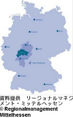
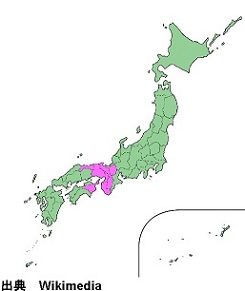

DIGIMARI - デジ真理(まり)
Digital Manufacturing Research Initiative
プロジェクト
ミッテルヘッセン工科大学は、ドイツ連邦教育研究省の支援の下、企業のデジタルトランスメーションを推進するためのプロジェクト „Digital Manufacturing Research Initiative“ (略称 „DIGIMARI“、日本語名称「デジ真理(まり)」)を開始しました。「デジ真理」は、ドイツ連邦教育研究省のキャンペーン「ザ・フューチャー・オブ・ワーク」への参加を認められたプロジェクトです。産業基盤のとりわけ強固な関西地方にパートナーを獲得し、日独で力を合わせてデジタルビジネスモデルや革新的デジタルプロセスの開発、ノウハウ移転を行うことを目指しています。実施期間は2019年6月1日から2020年11月30までの18か月です。
ドイツのパートナー
地元の３団体によって構成されるミッテル ヘッセン産学ネットワークが、プロジェク ト実行をサポートします。
- スマート・エレクトロニック・ファクトリー(SEF) 約30の電機産業事業所と研究機関により構成される連盟
- リサーチキャンパス・ミッテルヘッセン(FCMH) ミッテルヘッセンの3大学により構成される連盟
- ミッテルヘッセン地域マネジメント公社 教育、インフラ、イノベーション部門での多彩なプロジェクトで地域振興に貢献

 プロジェクト「デジ真理」は関 西地方の提携パートナーを募集 しています。日独それぞれの良 さを生かして、製造業における デジタル化という課 題に取り組みませんか？
対象
- 製造業を営む中小規模の事業所(機械、電気部品、自動車部品など)
- 大学
- 研究機関
オファー
三つの形でのサービスを提供します。- デジタルビジネスモデルなどに関する日独共同研究プロジェクト
- インダストリー4.0応用のための二国間共同テストプラットフォームの構築
- 革新的デジタルプロセスを構想したり実装したりする際のノウハウ移転
日本での活動予定
2020年にドイツのプロジェクトメンバーが二度にわたり日本を訪問します(3月末と9月)。滞在期間中のロードショーやシンポジウム実施を計画しています。お問い合わせ
ミッテルヘッセン工科大学経営学部内に設置されたプロジェクトマネジメントオフィスが承ります。日本人スタッフによる日本語での対応も可能です。どうぞお気軽にお問い合わせください。リンク
- ドイツ連邦教育研究省キャンペーン
「ザ・フューチャー・オブ・ワーク」
公式ホームページ - キャンペーン公式ホームページ内
プロジェクト「デジ真理」コーナー - ミッテルヘッセン工科大学 経営学部
- プロジェクトマネジメントオフィス所在地
- ギーセン、ドイツ
- ドイツ国内のパートナー
- リサーチキャンパス・ミッテルヘッセン (FCMH)
- ミッテルヘッセン地域マネジメント公社
- スマート・エレクトロニック・ファクトリ
- 対象国
- 日本